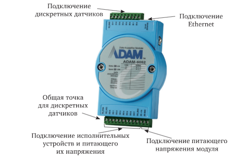
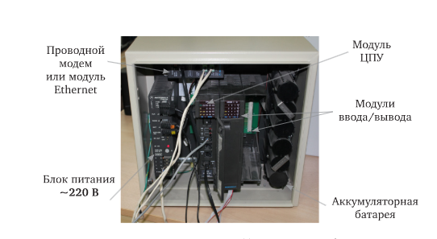

Средства автоматизации и управления
§ 6.4 · стандартные языки ПЛК. Жмите
МЭК 61131-3 задаёт пять стандартных языков программирования ПЛК
§ 6.4 · языки курса. Жмите
LD — программный аналог релейно-контактных схем (RLL)
Рис. 6.9 · жмите карточку
управляющая программа выполняется циклически
§ 6.4.1 · рис. 6.10. Жмите
условия и инструкции на ветвях · катушки OUT / END
§ 6.4.2 · рис. 6.11 · CODESYS. Жмите
FBD — как схема на микросхемах: блоки связаны линиями данных
§ 6.4.2 · базовый набор · как у LD. Жмите
база: арифметика · логика · таймеры · счётчики · SET/RESET
SFC — высокий уровень: только состояния и условия перехода
ST — текстовый язык · синтаксис очень близок к Pascal
сбор с датчиков → MODBUS · команды на выходы · АЦП/ЦАП

база 3 / 4 / 6 / 9 слотов · слева всегда ЦПУ
ЦПУ = процессор + БП + встроенные точки ВВ
MOSCAD · до 15 модулей ВВ на один ЦПУ

TI AM3358 · 800 МГц · цикл 3 мс · CODESYS V3.5
Тема 6: языки ПЛК · ADAM · KOYO · Omron · MOSCAD · ПЛК210.